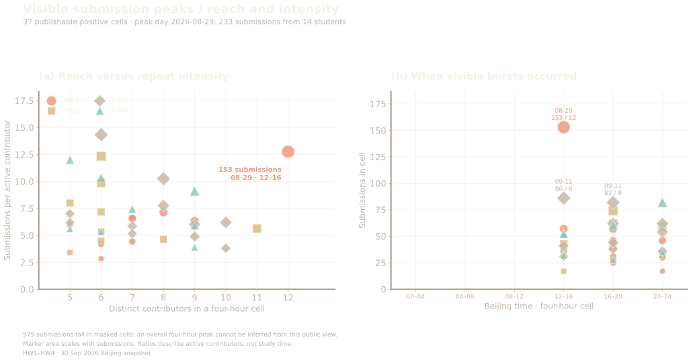
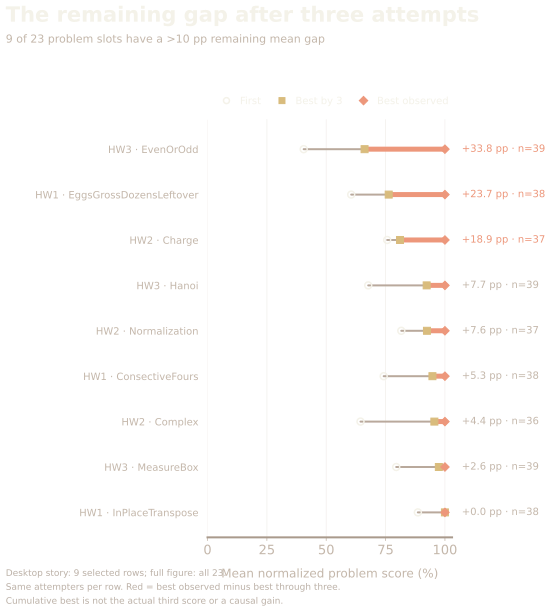
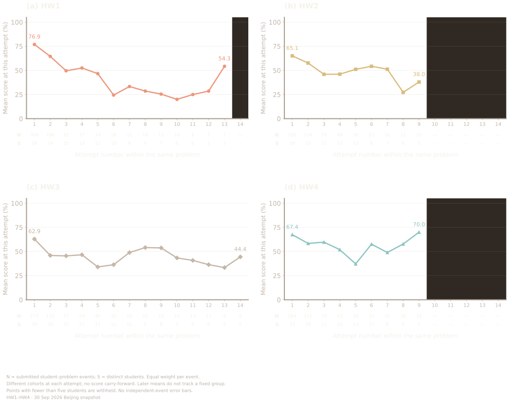
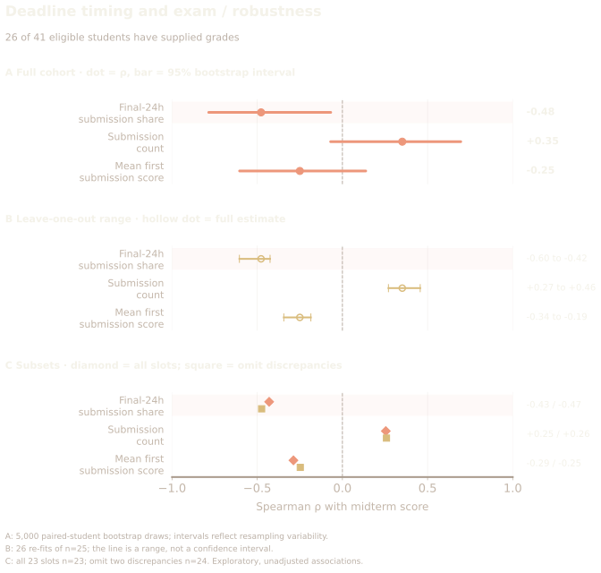
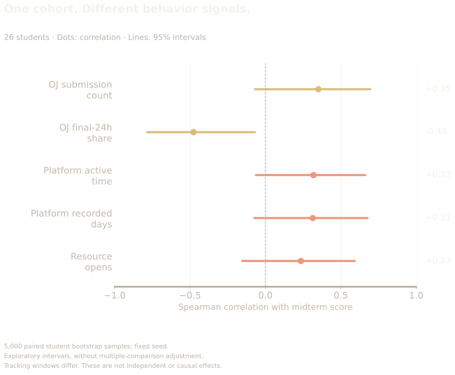

OJ + Course Pulse + midterm outcomes / STATS 401
The score has a past.
2,101 submissions.
Three homeworks.
26 matched exam scores.
Two behavior sources.
Five featured views.
First submission Mean / 100
37.95Best submission Mean / 100
HW3 TicTacToe · Same 39 attempters
First and best scores describe submissions, not a causal learning effect.
Visible submission peaks
A busy window.
How many people?
On 29 August, 233 submissions came from 14 students. The busiest publicly visible four-hour cell held 153 submissions from 12 contributors; masked cells keep the overall four-hour peak unknown.
Visible cells only · submissions are not study time

Problem bottlenecks
Which problems
keep a gap?
Nine of 23 problem slots have more than a 10-point gap between mean best through three attempts and best observed. The story selects nine rows on desktop and six on mobile; the analysis figure shows all 23.
Same attempters per problem · means do not count students who improved

Actual attempt scores
A new attempt.
A different cohort.
Each point averages the actual nth submission to a problem. Pairs that stop submitting leave the later points.
N = events · S = students · no carry-forward

Process and exam
How stable is
the association?
Final-day submission share has a negative rank association with exam scores (ρ = -0.48). Compare its bootstrap interval, leave-one-out range and two sensitivity cohorts before interpreting it.
26 available grades · sensitivity checks are not adjusted effects

Combined evidence
Timing stands out.
Usage is less certain.
Platform time, recorded days and resource opens show positive associations, but all three intervals cross zero. OJ final-day share remains negative.
26 students · 11 with recorded usage · tracking begins 8 Sep · no record does not mean no learning · exploratory

CONTINUE THE RESEARCH
Behind the figures.
Read the detailed analysis, data tables and methods on a separate page.
Analysis & methods ↗